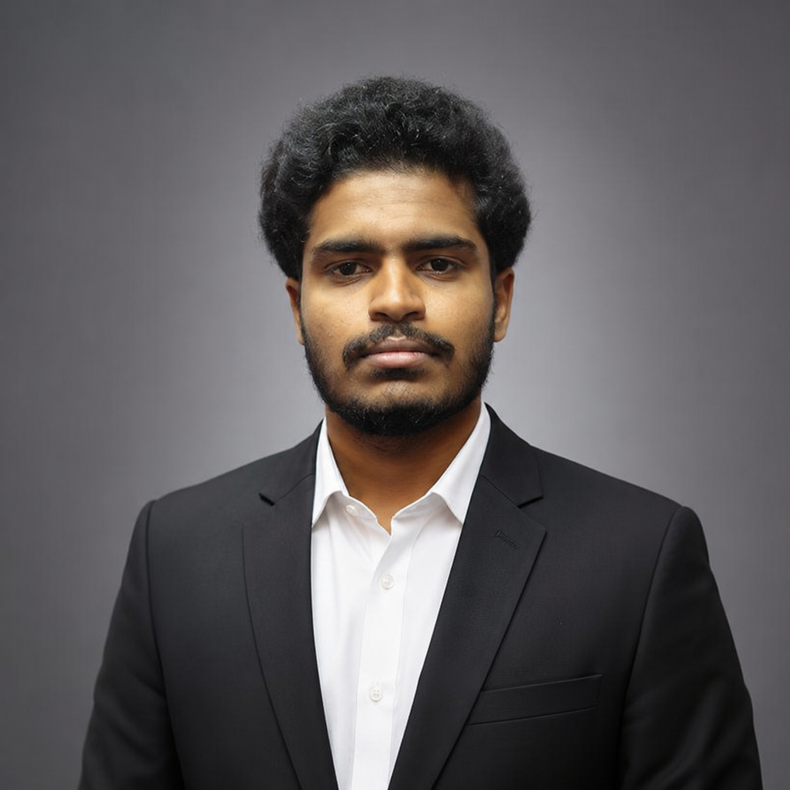

 |
Hi I'm Nithish Kumar Aspiring Full Stack Developer | ECE Student I am a passionate Electronics and Communication Engineering student with a strong interest in web development and software technologies. Currently, I am learning Full Stack Development and building projects using HTML, CSS, JavaScript, Python, Git, and GitHub. I enjoy solving problems, learning new technologies, and creating user-friendly web applications. My goal is to start my career as a Full Stack Developer and contribute to innovative software solutions. |
Professional Summary click here showI am a motivated and enthusiastic fresher currently learning Full Stack Development. I have knowledge of HTML, CSS, JavaScript, and Python, and I am continuously improving my skills through hands-on practice and projects. I am a quick learner, hardworking, and passionate about web development. I am looking for an opportunity to start my career as a Full Stack Developer where I can apply my skills, gain practical experience, and contribute to the growth of the organization while learning from experienced professionals. |
Carrer Objective click here showTo secure an entry-level position in a reputable organization where I can utilize my technical and problem-solving skills. I aim to contribute to the growth of the company while continuously improving my knowledge and abilities. As an Electronics and Communication Engineering graduate, I am eager to learn new technologies and industry practices. I am committed to working with dedication, teamwork, and professionalism. I seek opportunities that help me develop both personally and professionally. I am passionate about taking on challenges and delivering quality results. My goal is to build a successful career while contributing positively to organizational success. |